Hola, ¿qué hai trala cancela verde?
A Cancela Verde é unha explotación agraria familiar (no REAGA)
que está nun lugar onde sempre se traballou a terra mesmiño na Coruña (CTV).
Vámola ir abrindo xa...
...pronto a verás a todo color ;-)
Nembargantes a continuación amosarémosvos algo do que xa hai tras dela :-)
Hai cero fitosanitarios, a de 2021 foi a primeira colleita que fixemos deste xeito.
Hai vontade de segui-los criterios do CRAEGA, déixennos ou non obte-la certificación.
Hai dedicación e traballo, métodos tradicionáis, respecto ó medio
(mantemos o entorno limpo e bonito, prantamos alimento para os silvestres, hotéis de insectos, compostaxe, etc, etc...)
Hai selección das variedades máis resistentes e axeitadas ó entorno.
Hai excedentes do que nós mesmos consumimos, para poder, afortunadamente, compartir.
E hai un lote de cousas ás que lle facer fotos e que de seguido engadimos, ¡disfrutádeas!
...xa estamos recollendo para o inverno de 2021
- ¡Recollemos!
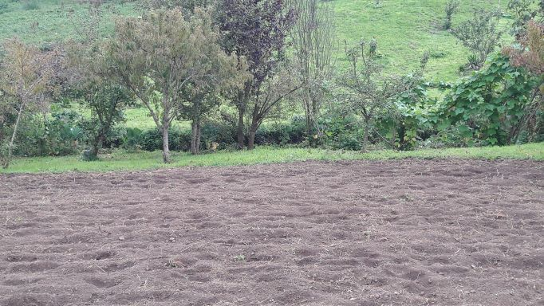
volta ó Inicio - ¡Recollemos!
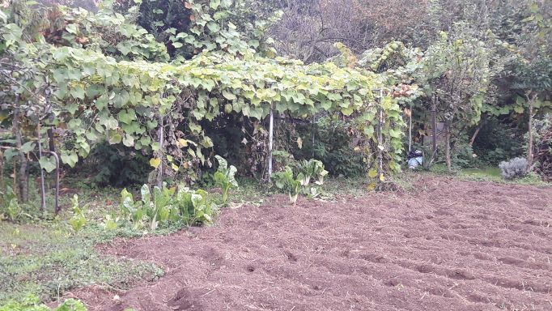
volta ó Inicio - ¡Recollemos!

volta ó Inicio - No inverno toca recollerse, descansa-la terra, o seu tempo de lecer!
volta ó Inicio
...a tempada de inverno 21/22 xa da os seus froitos
- Laranxas, ¡na pranta!
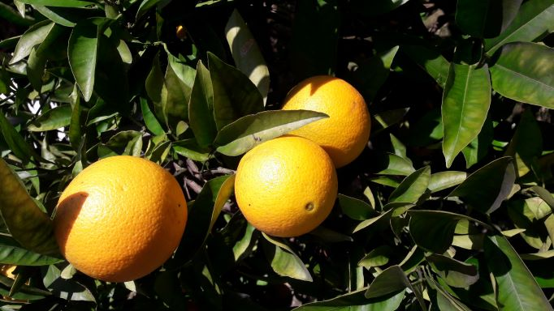
volta ó Inicio - Laranxas, ¡apañadas!
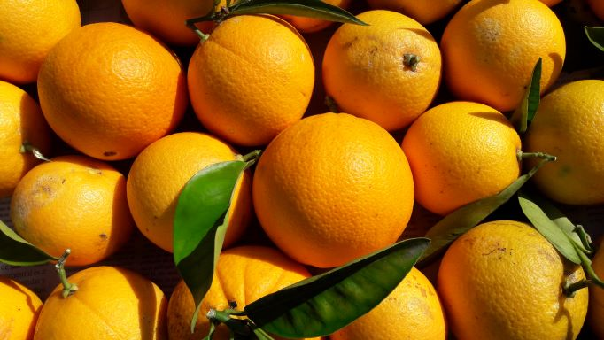
volta ó Inicio - Kiwis, ¡na pranta!
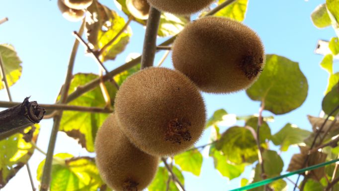
volta ó Inicio - Kiwis, ¡apañados!
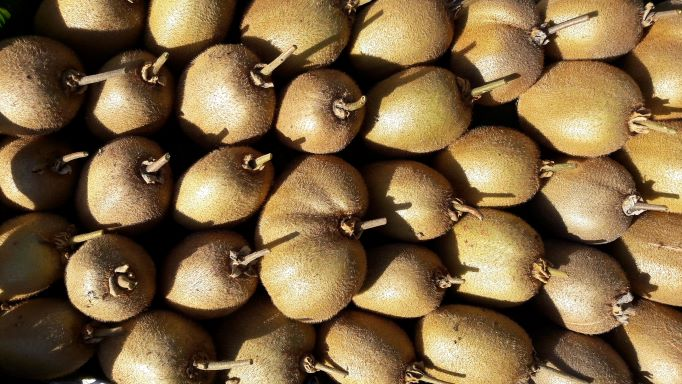
volta ó Inicio - Limóns, ¡na pranta!
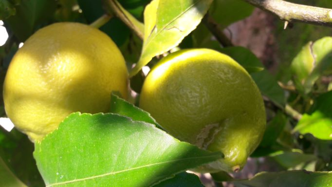
volta ó Inicio - Limóns, ¡apañados!
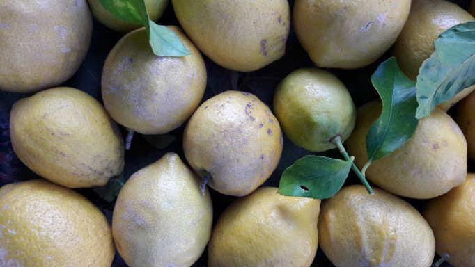
volta ó Inicio - Das chaiotas sen pinchos xa moi poucas quedan
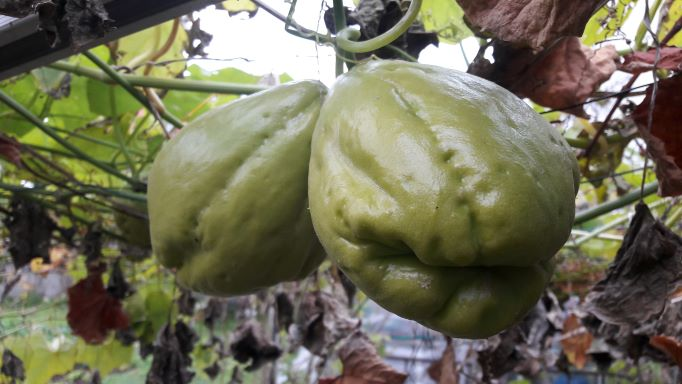
volta ó Inicio - ...das pinchudas tamén vai menguando
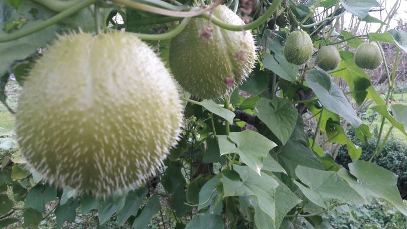
volta ó Inicio - No outono xa poucas cousas medran, tempo de procura-la nova semente... :-)
volta ó Inicio
Trala cancela verde aínda poderemos atopar moitas cousas bonitas....
- ¡coma un sol!
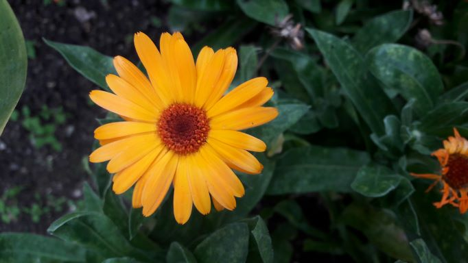
volta ó Inicio - ¡ledicias pequerrechiñas!
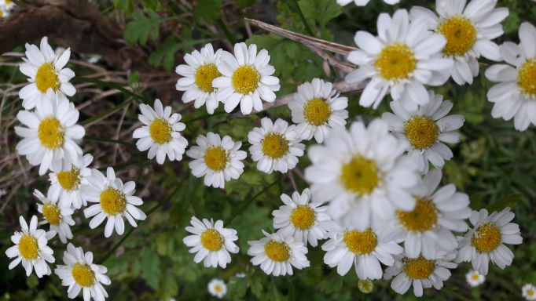
volta ó Inicio - ¡quece velas!
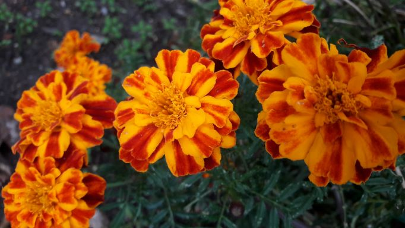
volta ó Inicio - ¡fermosura salvaxe neste tempo!
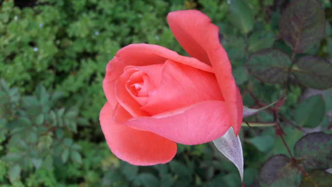
volta ó Inicio - ¡gracias natureza!
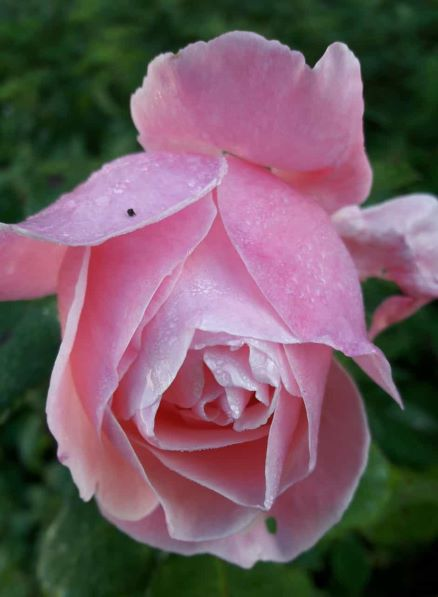
volta ó Inicio